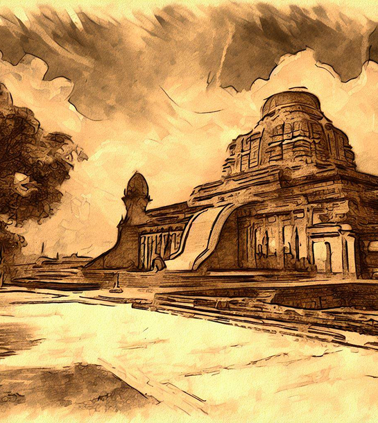
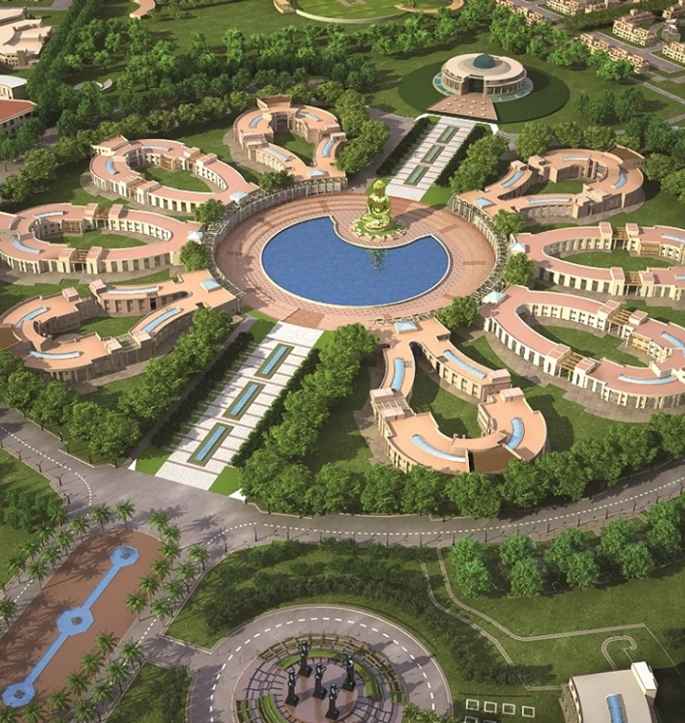

24-26 July, 2026 | Gautam Buddha University, Greater Noida, Uttar Pradesh
Indian Knowledge Systems (IKS) encompass a vast knowledge inventory of
intellectual traditions of and
from India. In short, it stands for the knowledge nuggets developed and pursued in India. These
traditions encompass diverse fields ranging from epistemic inquiries to engineering sciences. These
knowledge frameworks, tools and systems, evolved and developed over several millennia, offer unique
insights into the human condition, the natural world, and the pursuit of knowledge itself.
Recently, studies in IKS have seen an emergence. The First Annual Academic Conference on Indian
Knowledge Systems held in July 2025 at New Delhi saw an enthusiastic participation of almost 450
scholars who presented their work and discussed various aspects of IKS.


Gautam Buddha University (NAAC B+Accredited) was established in 2002 (Uttar Pradesh Act). It is
located on a 511-acre eco-friendly residential campus in Greater Noida. The University offers
professional programmes in various fields such as Law, Management etc. and maintains high academic
and quality standards, further affirmed by its ISO 9001:2008 certification.
Inspired by India’s rich civilizational legacy and the inclusive vision of Gautam Buddha, the
University integrates human values, ethical understanding, and holistic development into its
academic mission. Dedicated centres such as the School of Buddhist Studies & Civilization and the
Center of Linguistics and Culture Studies actively promote research in classical Indian thought,
culture, languages, and knowledge traditions.
With an emphasis on interdisciplinary learning and a commitment to nurturing intellectually engaged
and socially responsible individuals, GBU fosters an academic climate where ancient Indian insights
can dialogue with contemporary scholarship. Its open, research-driven environment makes it an ideal
venue for national and international initiatives in Indian Knowledge Systems (IKS).
The aim of this Second Annual Conference on Indian Knowledge Systems is
to promote worthy research scholarship in IKS and cultivate the next generation of scholars in this
domain.
IKS scholars are invited to submit their work. After acceptance from an established team of
reviewers, the scholars will be given a chance to present their work orally or through posters at
the conference. In addition, the conference will host invited plenary talks and panel discussions.
In sum, the conference will provide a fertile space for meaningful discourses in IKS among
academicians, senior scholars, young career academics, journal editors and reviewers, to
flourish.
The stakeholders from industry, government and civil society organizations will also be presenting
their works to foster greater collaborations and offer ideas for potential joint projects that may
have direct relevance.
We encourage papers in other related areas of discipline as well.
Papers will be selected through a rigorous peer-review process. Scholars
are requested to submit full-length papers through an online portal in the prescribed format (double
blind format).
The language of submission is English. Only accepted papers will be presented in the conference
through either oral mode or as posters.
The decision of the review committee will be final.
Applications need to be submitted in an online form.
For any clarification, please write to us at
conference@theiksha.org
(please do not send your submissions on this email, use only the form to submit).
01 November 2025: Announcement of the Call for Papers
10 January 2026: Submission of extended abstract (1000 words which indicates theoretical
framework, methods, results and discussion with a small indicative bibliography and this
bibliography will not be counted in word limits). Download Abstract
Format
31 January to 10 February 2026: Communication of acceptance of
abstract for full papers
15 May 2026: Submission of Full Papers in the template provided (around up to around 10
pages or around 8000 words of content excluding tables, figures, appendix, references) in IKSHA
Journal format.Check
Details
15 June 2026: Acceptance Announcement
24-26 July 2026: Conference Date